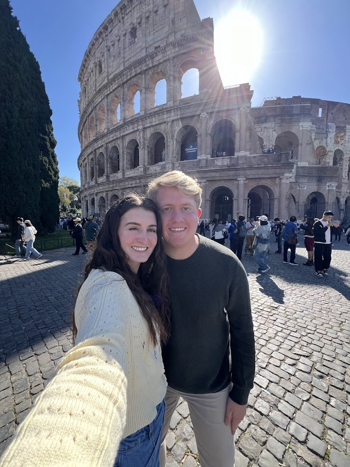
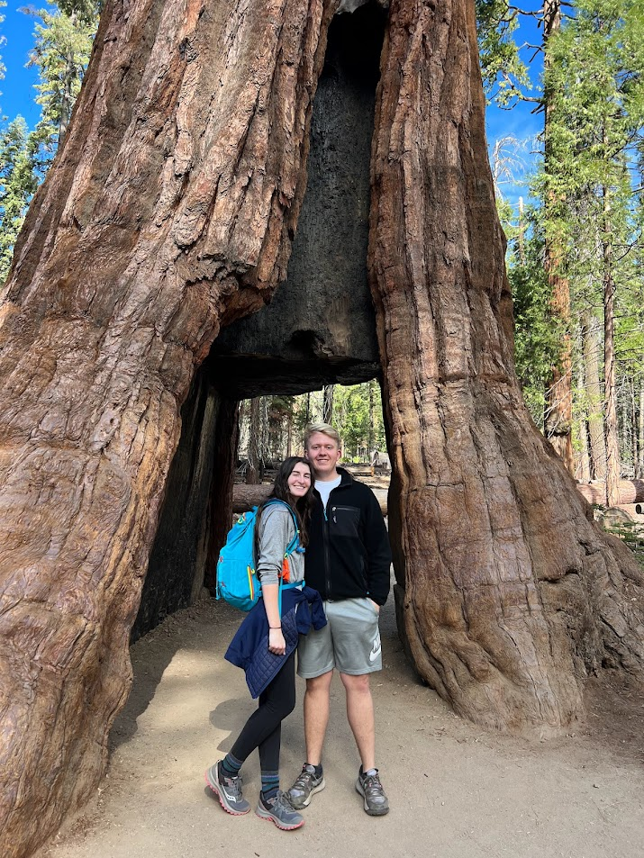

High School Diploma
Rio Rancho High School, Rio Rancho, NM
Currently Enrolled Student
Brigham Young University, Provo, UT
Sales Representative/Team Leader Manager
Moxie Pest Control, September 2021-Current
Used sales skills to effectively communicate our service to customers in order for them to make an informed decision. Appointed to team lead position and trained an office of sales representatives in order to ensure peak performance. Collaborated alongside other leaders to effectively prepare representatives for the job. Additionally worked to prepare areas on a daily basis to masterfully cover and maintain our presence in the area
Traveling as a hobby offers me a thrilling escape from the mundane, allowing me to immerse myself in new cultures and experiences. Exploring unfamiliar destinations fuels my curiosity and sense of adventure, while forging unforgettable memories and connections along the way. Ultimately, it's the excitement of discovery and the opportunity to broaden my perspective that makes travel an irresistible passion.
Watching movies as a hobby provides me with a captivating escape into diverse worlds, narratives, and emotions. From gripping dramas to light-hearted comedies, each film offers a unique journey of entertainment and reflection. Whether alone or with loved ones, the magic of cinema sparks imagination, fosters empathy, and creates cherished moments of enjoyment.
Hiking as a hobby allows me to reconnect with nature, rejuvenate my spirit, and challenge myself physically. Exploring scenic trails and breathtaking landscapes offers a sense of adventure and serenity that cannot be replicated elsewhere. With each step, I embrace the beauty of the outdoors, immerse myself in the present moment, and find solace in the rhythm of nature's heartbeat.
